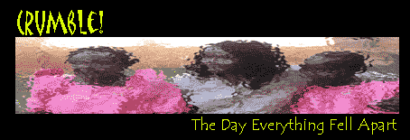

<html>


<!-- Mirrored from www.exitmundi.nl/crumble.htm by HTTrack Website Copier/3.x [XR&CO'2014], Mon, 28 Jun 2021 00:54:21 GMT -->
<!-- Added by HTTrack --><meta http-equiv="content-type" content="text/html;charset=UTF-8" /><!-- /Added by HTTrack -->
<head>
<meta http-equiv="Content-Language" content="en-us">
<meta http-equiv="Content-Type" content="text/html; charset=windows-1252">
<meta name="GENERATOR" content="Microsoft FrontPage 4.0">
<meta name="ProgId" content="FrontPage.Editor.Document">
<title>The Big Crumble</title>
</head>

<body bgcolor="#000000" text="#FFFFFF" link="#00FFFF" vlink="#FF00FF">

<p class="MsoNormal" align="center"><span lang="EN-US"><font face="Arial" size="3"><br>
<o:p>
&nbsp;
</font></span></p>
<blockquote>
  <blockquote>
    <p class="MsoNormal" align="center"><span style="mso-fareast-font-family: Times New Roman; mso-ansi-language: EN-US; mso-fareast-language: EN-US; mso-bidi-language: AR-SA" lang="EN-US"><font color="#FF9900" face="MS Sans Serif" size="4">It
    is a problem so strange only a handful of physicists know about it. Well,
    that is until one day, the ‘problem’ becomes real. It will be some
    bizarre event. For on that day, everything in the Universe will fall apart.</font></span></p>
  </blockquote>
  <p class="MsoNormal"><font face="MS Sans Serif" size="3"><br>
  Just picture it. You’re standing in the subway during rush hour. Then,
  suddenly, you hear a funny sound. It is the guy standing next to you. He looks
  ill. And then, the incredible happens. Right before your eyes, the poor fellow
  crumbles, much like a piece of porcelain breaking up. He literally cracks up
  into thousand pieces. And then -- he’s gone. Just that: gone. You find
  yourself standing at a foul-reeking muddle of liquid on the floor.</font></p>
  <p class="MsoNormal"><font face="MS Sans Serif" size="3">You are, of course,
  stunned. But wait, see that lady over there? Oh no, she’s crumbling, too!
  And look, that old man over there -- he’s also vanishing. One by one, people
  on the subway just... go liquid. Suddenly, you’re all alone. Where commuters
  used to be, only little pools of liquid remain.</font></p>
  <p class="MsoNormal"><font face="MS Sans Serif" size="3">You gasp for breath.
  But then, suddenly, you feel a little... weird. It is a kind of pain that
  isn’t really pain; a kind of sickness that isn’t really sickness. &quot;What...&quot;,
  you utter. But then you utter nothing more. Your body makes a
  wettish ‘splash’ as it hits the floor.</font></p>
  <p class="MsoNormal"><font face="MS Sans Serif" size="3">What has happened to
  you, is a weird and little-known phenomenon, a true freak of physics. You’ve
  been hit by the changing of the ‘fundamental constants’. And the bad news
  is this: more and more scientists believe the disaster is real -- and
  inevitable. Yes, you read that right: inevitable. Like it or not, the Universe
  seems to be heading towards the Big Crumbling.</font></p>
  <p class="MsoNormal"><font face="MS Sans Serif" size="3"><font color="#FF9900">And
  people going liquid on the subway is only one thing.</font> If you looked up,
  you would perhaps witness the Sun exploding. Oh, and all stars would explode,
  too. Planets might swell, like balloons. Trees, animals and plants will
  crumble and liquefy, just like you. All kinds of rocks will come apart and
  vaporize. It is in fact hard to predict what exactly will happen in what
  order, when the fundamental constants reach their critical values.</font></p>
  <p class="MsoNormal" align="center"><font face="MS Sans Serif" size="3"></font></p>
  <p class="MsoNormal">&nbsp;</p>
  <p class="MsoNormal"><font face="MS Sans Serif" size="3"><div align="right">
    <table border="0" width="160" align="right" height="600" cellspacing="5" cellpadding="5">
      <tr>
        <td width="100%"><script type="text/javascript"><!--
google_ad_client = "pub-5046374505441754";
google_ad_width = 160;
google_ad_height = 600;
google_ad_format = "160x600_as";
google_ad_type = "text_image";
//2007-01-16: brede paal rood/grafit
google_ad_channel = "7001327099";
google_color_border = "000000";
google_color_bg = "F0F0F0";
google_color_link = "CC0000";
google_color_text = "000000";
google_color_url = "008000.html";
//--></script>
<script type="text/javascript"
  src="../pagead2.googlesyndication.com/pagead/f.txt">
</script></td>
      </tr>
    </table>
  </div>
There, we’ve said
  it: ‘critical values’, ‘fundamental constants’. Understanding what
  went wrong isn’t a piece of cake.</font>
  <p class="MsoNormal"><font face="MS Sans Serif" size="3">First, you should
  know the Universe and everything in it is based on certain fixed numbers. The
  speed of light is one of them: no matter where you look, the speed of light is
  ALWAYS the same. It is a constant. A given. The speed of light is just the way
  it is -- no more, no less.</font></p>
  <p class="MsoNormal"><font face="MS Sans Serif" size="3">And there are many
  more constants underpinning nature. All in all, there are about 25 of these
  physical ‘holy numbers’. There’s the mass of the proton. The strength of
  the electromagnetic force. The strength of gravity. The strong nuclear force.
  The ‘Planck constant’. ‘Avogadro’s number’. And so on, and so on.</font></p>
  <p class="MsoNormal"><font face="MS Sans Serif" size="3"><font color="#FF9900">There’s
  a very peculiar thing about the constants.</font> They make us possible. All
  of the constants have exactly the right values to make the Universe possible.
  Had one of them been only a smidgen bigger or smaller, molecules wouldn’t be
  stable, stars wouldn’t be there, and you wouldn’t be here reading this. So
  we should consider ourselves very lucky the constants are exactly the way they
  are.</font></p>
  <p class="MsoNormal"><font face="MS Sans Serif" size="3">But the thing is --
  we’re running out of luck. In 2001, physicists studying distant galaxies
  discovered something totally weird and unexpected. One of the constants, the
  so-called ‘fine structure constant’, seems to be changing! Very, very
  slowly, it is getting bigger.</font></p>
  <p class="MsoNormal"><font face="MS Sans Serif" size="3">This ignited a debate
  that rages until this day. Other scientists simply can’t believe it.
  Constants should be, well, constant. But in the meantime, there’s more and
  more evidence they’re not. There are clues the mass of the proton is on the
  move, too. And the speed of light and the Planck constant -- all gooey. Now
  take a long, deep breath and think about this for a while. Very slowly, the
  very foundations of the Universe are getting unstable!</font></p>
  <p class="MsoNormal"><font face="MS Sans Serif" size="3"><font color="#FF9900">Yup,
  you get the picture - that’s bad news.</font> It means the Universe is
  heading for destruction. It will take many billions of years. But in the long
  run, the constants will change our Universe completely. Atoms will no longer
  be possible. Stars will no longer be stable. Matter itself will no longer be
  able to exist.</font></p>
  <p class="MsoNormal"><font face="MS Sans Serif" size="3">There you have it --
  the day everything falls apart. It is estimated that if the fine-structure
  constant were only 1 to 3 percent bigger than it is today, carbon will become
  unstable and cease to exist. That’s where people will fall apart: everything
  that lives is made of carbon. No carbon, and all that will be left of you
  is... well, the wet stuff.</font></p>
  <p class="MsoNormal"><font face="MS Sans Serif" size="3">And that’s just one
  thing. If the force of gravity were to dim just a few percent, stars would go
  out. If it got a tad bigger, stars would overheat
  and explode. If the ‘strong nuclear force’ grows slightly, the Sun
  would burn up in less than a second. If it goes down, the stuff
  known as ‘deuterium’ (H</font><font face="MS Sans Serif" size="1">3</font><font face="MS Sans Serif" size="3">)
  falls apart, and the Sun goes out. Hey, we could go on like this
  forever!</font></p>
  <p><font face="MS Sans Serif" size="3"><span style="mso-fareast-font-family: Times New Roman; mso-ansi-language: EN-US; mso-fareast-language: EN-US; mso-bidi-language: AR-SA">So...
  should we brace ourselves? Well, not yet. No matter how certain the Big
  Crumble is, it will still take an estimated 3,000 billions of years before
  we’d begin to notice it. That’s 3,000,000,000,000 years from now! What you
  call: the distant future. By that time, at least you don’t go about in
  subways anymore. In fact, humanity probably won’t be there at all anymore.
  We will have <a href="evolution.html"> evolved into something else</a>, or find ourselves killed by <a href="Comets.html">meteors</a>,
  the <a href="Sunburn.html">exploding Sun</a>, <a href="Robots.html">robots</a>
  or <a href="volcano.html">supervolcanoes</a>.</span></font></p>
<blockquote>
  <p class="MsoNormal" style="text-align:justify;line-height:12.0pt;tab-stops:-72.0pt -36.0pt"><span lang="EN-US" style="letter-spacing:-.15pt"><font face="MS Sans Serif"><o:p></o:p>
  </font></span></p>
  <div align="right">
    <table border="0">
      <tr>
        <td><a href="mailto:mke@xs4all.nl"></a></td>
        <td><a href="intro2.html"></a></td>
      </tr>
    </table>
  </div>
</blockquote>


  <p class="MsoNormal">&nbsp;<div align="center">
    <center>
    <table border="0" width="728" height="90">
      <tr>
        <td width="100%"><script type="text/javascript"><!--
google_ad_client = "pub-5046374505441754";
google_ad_width = 728;
google_ad_height = 90;
google_ad_format = "728x90_as";
google_ad_type = "text_image";
//2007-01-16: rood grafiet leaderbord
google_ad_channel = "5833008090";
google_color_border = "CC0000";
google_color_bg = "CCCCCC";
google_color_link = "CC0000";
google_color_text = "333333";
google_color_url = "666666.html";
//--></script>
<script type="text/javascript"
  src="../pagead2.googlesyndication.com/pagead/f.txt">
</script>
      </tr>
    </table>
    </center>
  </div>
<p class="MsoNormal"><span lang="EN-US"><o:p><font face="MS Sans Serif" color="#FFFF00" size="4">LINKS
OUT</font><br>
<br>
<a href="http://www.ast.cam.ac.uk/~mim/res.html" target="_blank"><font face="MS Sans Serif">Variable
fundamental constants? - By researcher Michael Murphy</font></a>
</span></p>
  <p class="MsoNormal"><span lang="EN-US"><a href="http://www.chemie.fu-berlin.de/chemistry/general/constants_en.html" target="_blank"><font face="MS Sans Serif">The
  fundamental physical constants</font></a></span></p>
  <p class="MsoNormal"><span lang="EN-US"><a href="http://physicsweb.org/articles/world/16/4/9" target="_blank"><font face="MS Sans Serif">Are
  the laws of nature changing with time (Physics Web)</font></a></span></p>
  <p class="MsoNormal"><span lang="EN-US"><a href="http://physorg.com/news3665.html" target="_blank"><font face="MS Sans Serif">Sacred
  constants might be changing (PhysOrg)</font></a></span></p>
  <p class="MsoNormal">&nbsp;</p>
  <p><!-- End Webstats4U code -->
  </p>
  <p align="center"><font size="2">All texts Copyright © Exit Mundi / AW Bruna
  2000-2007.<br>
  You're not allowed to copy, edit, publish, print or make public any material
  from this website without written permission by Exit Mundi.</font></p>
  <p class="MsoNormal">&nbsp;</p>
</blockquote>


<!-- Begin Nedstat Basic code -->
<!-- Title: The Big Crumble! -->
<!-- URL: http://www.exitmundi.nl/crumble.htm -->
<script language="JavaScript" type="text/javascript" src="../m1.nedstatbasic.net/basic.js">
</script>
<script language="JavaScript" type="text/javascript" >
<!--
  nedstatbasic("ADV9mARqNAgKK1TYNzwZLaqSjFjw", 0);
// -->
</script>
<noscript><!-- End Nedstat Basic code -->


<!-- Mirrored from www.exitmundi.nl/crumble.htm by HTTrack Website Copier/3.x [XR&CO'2014], Mon, 28 Jun 2021 00:54:22 GMT -->
</html>
